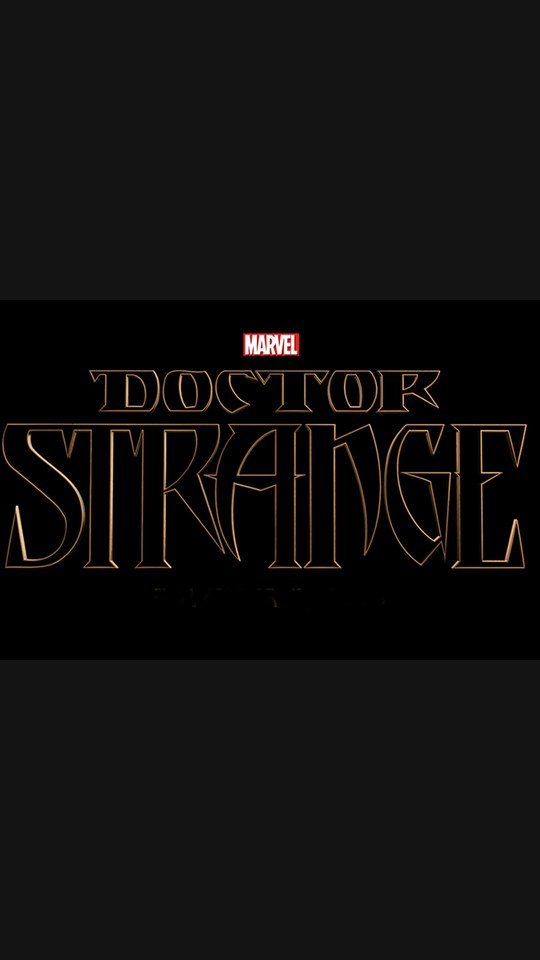

n1_b1
Purpose: hook_subject
Query: Doctor Strange Mirror Dimension
Asset: image
Provider: Wikimedia Commons
License: Public domain
Resolution: None × None
Duration: None
Target: 2.2s
Evidence: ['E3', 'E4']
Source: Open source
Attempted queries
- Doctor Strange Mirror Dimension
- Doctor Strange film
- Doctor Strange promotional image
- surreal city architecture
- geometric city perspective
- abstract dimensional geometry
- distorted urban architecture
- impossible geometry architecture
- surreal cinematic architecture
- dramatic geometric city
Local file
generated\licensed_media\doctor-strange-visual-audit-001\ffa7a5ee4351.jpg